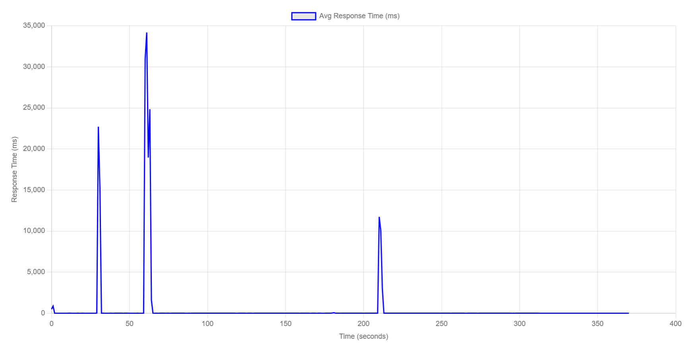
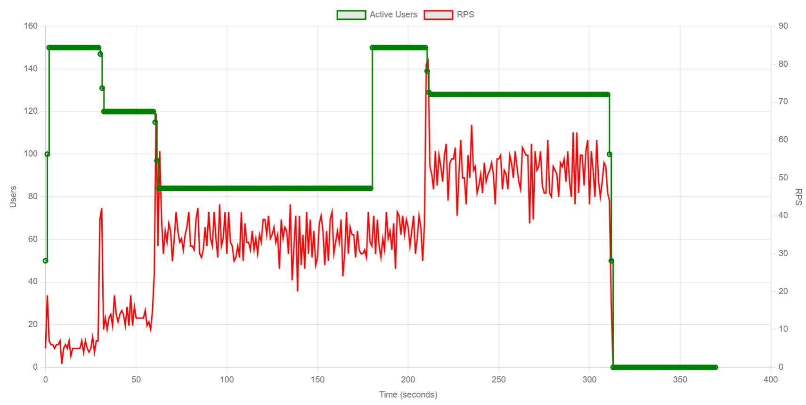
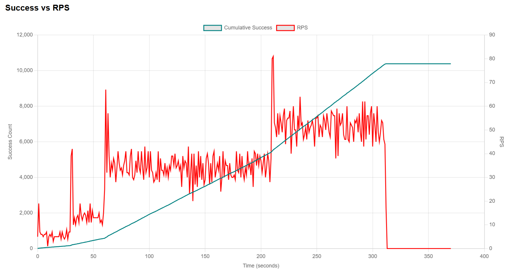
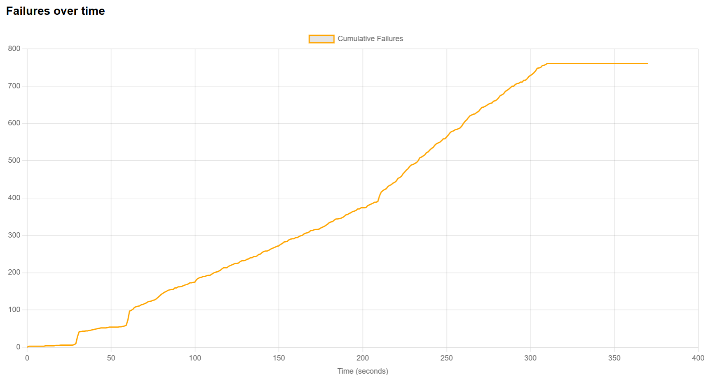

En este ejercicio ejecutamos una Prueba de Punto de Quiebre (Breakpoint Test). A diferencia de las pruebas de estrés que validan el funcionamiento bajo una carga alta conocida, el objetivo de esta prueba es aumentar la carga progresivamente y sin límites hasta que el sistema falle.
Esta prueba responde a la pregunta crítica: "¿Cuál es el número máximo de usuarios concurrentes que PredictHealth puede soportar antes de colapsar?". Identificar este límite es vital para la planificación de capacidad y escalado automático.
Las pruebas se ejecutaron desde una máquina local que actuaba como nodo maestro de Locust, generando tráfico HTTP hacia los servicios desplegados. Los componentes del sistema (CMS y microservicios) estaban corriendo localmente a través de Docker Compose.
Las URLs base configuradas para cada servicio bajo prueba fueron las siguientes:
http://localhost:80http://localhost:5000http://localhost:5001http://localhost:5002http://localhost:5003
Se utilizó un patrón de carga escalonado ("Step Load") definido en LoadTestShape.
La carga se incrementa en bloques cada minuto para permitir que el sistema se estabilice brevemente antes del siguiente empujón.
Este diseño agresivo busca forzar el fallo del sistema dentro de un periodo no mayor a 10 minutos.
Archivo break_point_test.py
El script utiliza la clase LoadTestShape para definir los escalones de carga.
# break_point_test.py
import math
from locust import HttpUser, LoadTestShape
# Importamos tus usuarios reales del proyecto
from users import DoctorUser, PatientUser, InstitutionUser
try:
import reporting
except ImportError:
pass
class StepLoadShape(LoadTestShape):
"""
Prueba de Punto de Quiebre (Break Point):
Aumenta la carga en escalones hasta encontrar el límite.
"""
step_time = 60 # Duración de cada escalón (60 segundos)
step_users = 50 # Usuarios nuevos por escalón
spawn_rate = 5 # Tasa de nacimiento (5 usuarios/seg)
def tick(self):
run_time = self.get_run_time()
# Calcula en qué escalón vamos (Minuto 1 = Escalón 1, Minuto 2 = Escalón 2...)
current_step = math.floor(run_time / self.step_time) + 1
# Calcula los usuarios totales para este escalón
target_users = current_step * self.step_users
# Le dice a Locust cuántos usuarios debe haber ahora
return (target_users, self.spawn_rate)
La prueba se ejecutó hasta alcanzar los 250 usuarios o el fallo del sistema. Los resultados indican un colapso claro del rendimiento.
# Ejecución en terminal:
$env:DOCTORS="10"; $env:PATIENTS="30"; $env:INSTITUTIONS="5"; locust -f break_point_test.py --headless --csv break_point --html break_point.html --host http://localhost:5000| Escalón (Minuto) | Usuarios | Comportamiento del Sistema |
|---|---|---|
| 00:00 - 03:00 | 50 - 150 | Estable. Tasa de error 0%. Latencia estable. |
| 03:00 - 04:00 | 200 | Alerta. Se observan los primeros signos de lentitud en el Login, pero el sistema resiste. |
| 04:15 | 250 | RUPTURA. En el momento exacto en que la carga sube a 250 usuarios, la tasa de fallos (Failures/s) se dispara verticalmente. |




Esta prueba fue reveladora y crítica para dimensionar la capacidad real del sistema, demostrando que la infraestructura es robusta en lectura pero mucho más frágil de lo estimado en procesos de autenticación.
El sistema demostró una estabilidad perfecta en los primeros escalones. Durante los primeros 3 minutos (cargas de 50, 100 y 150 usuarios), el sistema operó sin contratiempos, manteniendo una latencia baja y una tasa de error del 0%. Sin embargo, la capacidad máxima real se identificó en 250 usuarios concurrentes. Al intentar cruzar este umbral en el minuto 04:15, el sistema dejó de ser capaz de procesar nuevas peticiones de entrada.
La Figura 4 (Failures over time) ilustra gráficamente el momento exacto de la ruptura. La línea de fallos se mantiene completamente plana (en cero) durante las fases iniciales. En el momento exacto en que la carga sube a 250 usuarios, se observa un "muro" vertical de errores. La tasa de fallos pasa instantáneamente de 0 a >20 errores por segundo. Esto indica que el fallo no fue gradual (degradación lenta), sino catastrófico (bloqueo total) al saturarse la cola de conexiones.
El análisis de los logs y tipos de error (Timeouts y 503 Service Unavailable) apunta directamente al Microservicio de Autenticación (Auth-Service). Mientras que el API Gateway seguía intentando enrutar tráfico, el contenedor de Auth dejó de responder.
El sistema PredictHealth tiene un límite duro de 250 usuarios concurrentes. La ruptura del servicio es abrupta y catastrófica, no gradual. Esto representa un riesgo alto para la estabilidad en producción si no se gestiona, ya que un pico repentino podría dejar fuera de servicio el sistema completo.
La causa raíz ha sido aislada: Falta de escalado horizontal en el servicio crítico de escritura (Auth).